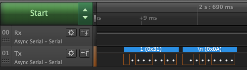

UART
Universal Asynchronous Receiver / Transmitter (UART) is a device used to transfer data between two devices. Data is broken down into a series of bits and transferred to the receiver sequentially. A second UART in the receiver reassembles the bits into the original data. The protocol allows for data to be transmitted over a single data line. Bi-directional communication is established by using two data lines.
The data lines are normally labelled Rx for receive and Tx for transmit. It is important to remember that when connecting two devices together the Rx line of the receiver should be connected to the Tx line of the transmitter. For bi-directional communication, this crossing of signal lines should be repeated.
Serial Port Properties
Serial ports rely upon the transmitter and the receiver being configured identically. A mismatch in the properties can result in a communication failure. The four properties most associated with a UART are:
- Baud rate
- Number of data bits
- Number of stop bits
- Parity
Voltage Levels
The UART on the Netduino and many other microcontrollers operate at TTL (Transistor - Transistor Logic) levels. On the Netduino this is 3.3V on other microcontrollers this may be 5V.
One serial protocol commonly used is RS-232. RS-232 allows the voltage levels to vary between -15V and + 15V. It is important not to connect a Netduino to circuits working at these voltage levels as this will damage the Netduino. The MAX232 series of conversion chips are available to translate between Netduino and RS-232 voltage levels.
UART Pins on the Netduino
There are four UARTs available on the Netduino:

Simple Transmitter and Receiver
Simple serial communication can be illustrated by making the Netduino talk to itself using two of the four available serial ports. In this simple scenario one of the com ports (COM1) will transmit data while a second port (COM4) will listen to the data being transmitted and display the messages in the debug console.
Hardware
The simple example under consideration requires only two wires and a Netduino.
Connect Rx of COM1 to SCL (Tx of COM4) and Tx of COM1 to SDA (Rx of COM4).
Software
The following example has COM1as the transmitter and COM4 as the receiver:
using System;
using System.Threading;
using System.IO.Ports;
using Microsoft.SPOT;
using System.Text;
namespace UARTTest
{
public class Program
{
/// <summary>
/// Two com ports, one sender and one receiver.
/// </summary>
/// <remarks>
/// Note that the transmitter and the receiver must be configured to use the
/// same baud rate, number of bits etc.
/// </remarks>
static SerialPort transmitter = new SerialPort("COM1", 9600, Parity.None, 8, StopBits.One);
static SerialPort receiver = new SerialPort("COM4", 9600, Parity.None, 8, StopBits.One);
/// <summary>
/// Timer object generates and event periodically to transmit data to the receiver.
/// </summary>
static Timer timer = new Timer(Timer_Interrupt, null, 0, 2000);
/// <summary>
/// Variables to hold information about the messages being transmitted and received.
/// </summary>
static int count = 0;
static string messageBeingReceived = "";
/// <summary>
/// The entry point of the program, where the program control starts and ends.
/// </summary>
public static void Main()
{
transmitter.Open();
receiver.Open();
receiver.DataReceived += SerialDataReceived;
Thread.Sleep(Timeout.Infinite);
}
/// <summary>
/// Process data from the serial port(s)
/// </summary>
/// <param name="sender">Serial port that is receiving the data.</param>
/// <param name="e">Event information.</param>
static void SerialDataReceived(object sender, SerialDataReceivedEventArgs e)
{
if ((e.EventType == SerialData.Chars) && (sender == receiver))
{
const int BUFFER_SIZE = 1024;
byte[] buffer = new byte[BUFFER_SIZE];
int amount = ((SerialPort)sender).Read(buffer, 0, BUFFER_SIZE);
if (amount > 0)
{
char[] characters = Encoding.UTF8.GetChars(buffer);
for (int index = 0; index < amount; index++)
{
if (buffer[index] == '\n')
{
Debug.Print("Message received: " + messageBeingReceived);
messageBeingReceived = "";
}
else
{
messageBeingReceived += characters[index];
}
}
}
}
}
/// <summary>
/// Periodic interrupt generated by the timer.
/// </summary>
/// <param name="state">State.</param>
static void Timer_Interrupt(object state)
{
if (transmitter.IsOpen)
{
count++;
String messageToSend = count.ToString();
Debug.Print("Sending message: " + messageToSend);
messageToSend += "\n";
transmitter.Write(Encoding.UTF8.GetBytes(messageToSend), 0, messageToSend.Length);
}
}
}
}
Key Program Elements
The first task is to create variables for the serial ports:
/// <summary>
/// Two com ports, one sender and one receiver.
/// </summary>
/// <remarks>
/// Note that the transmitter and the receiver must be configured to use the
/// same baud rate, number of bits etc.
/// </remarks>
static SerialPort transmitter = new SerialPort("COM1", 9600, Parity.None, 8, StopBits.One);
static SerialPort receiver = new SerialPort("COM4", 9600, Parity.None, 8, StopBits.One);
Once created it is necessary to open the com ports:
transmitter.Open();
receiver.Open();
An event handler is used to process any data received on the receiver serial port:
receiver.DataReceived += SerialDataReceived;
The messages are held in .NET string objects. The Encoding.UTF8.GetBytes method converts the string objects into an array of bytes that can be transmitted over the serial port:
transmitter.Write(Encoding.UTF8.GetBytes(messageToSend), 0, messageToSend.Length);
The Write method transmits a sequence of bytes to the receiver.
The most complex part of this application is the SerialDataReceived event. The method is complex due to the way in which the method is called. The SerialDataReceived method seems to be called randomly. For instance, sending 123456789 may generate two calls to the event handler, one of 1234 and a second for 56789. The event handler needs to take this into consideration when reassembling the messages. In this case, the newline character “\n” is used as an end of message marker. Characters are added to the message buffer until a newline is encountered. At this point the message is considered complete and a new message is started.
static void SerialDataReceived(object sender, SerialDataReceivedEventArgs e)
{
if ((e.EventType == SerialData.Chars) && (sender == receiver))
{
const int BUFFER_SIZE = 1024;
byte[] buffer = new byte[BUFFER_SIZE];
int amount = ((SerialPort)sender).Read(buffer, 0, BUFFER_SIZE);
if (amount > 0)
{
char[] characters = Encoding.UTF8.GetChars(buffer);
for (int index = 0; index < amount; index++)
{
if (buffer[index] == '\n')
{
Debug.Print("Message received: " + messageBeingReceived);
messageBeingReceived = "";
}
else
{
messageBeingReceived += characters[index];
}
}
}
}
}
Logic Analyser Output
Hooking up the logic analyser and looking at the first message generates the following output:

The white dots show the points where the protocol analyser is expecting to read a bit of data. The brown line shows the value that is being read.
Program Output
Running the above application generates the following output:
Sending message: 1<br/>
Message received: 1<br/>
Sending message: 2<br/>
Message received: 2<br/>
Sending message: 3<br/>
Message received: 3<br/>
Sending message: 4<br/>
Message received: 4
Further Reading
- Wikipedia article describing UARTs
- MAX232 Datasheet
- TTL (Transistor - Transistor Logic)
- RS-232 serial communication
Related Hardware
A number of cables and boards are available to connect TTL serial ports on the Netduino to a PC or Mac over USB. Examples include: